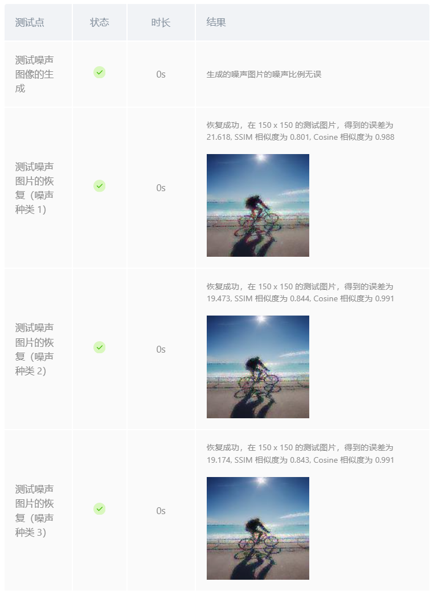
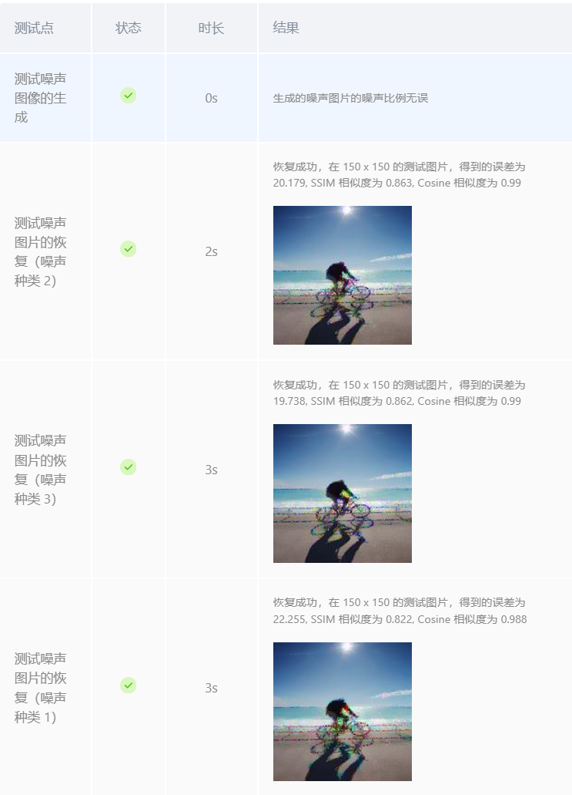
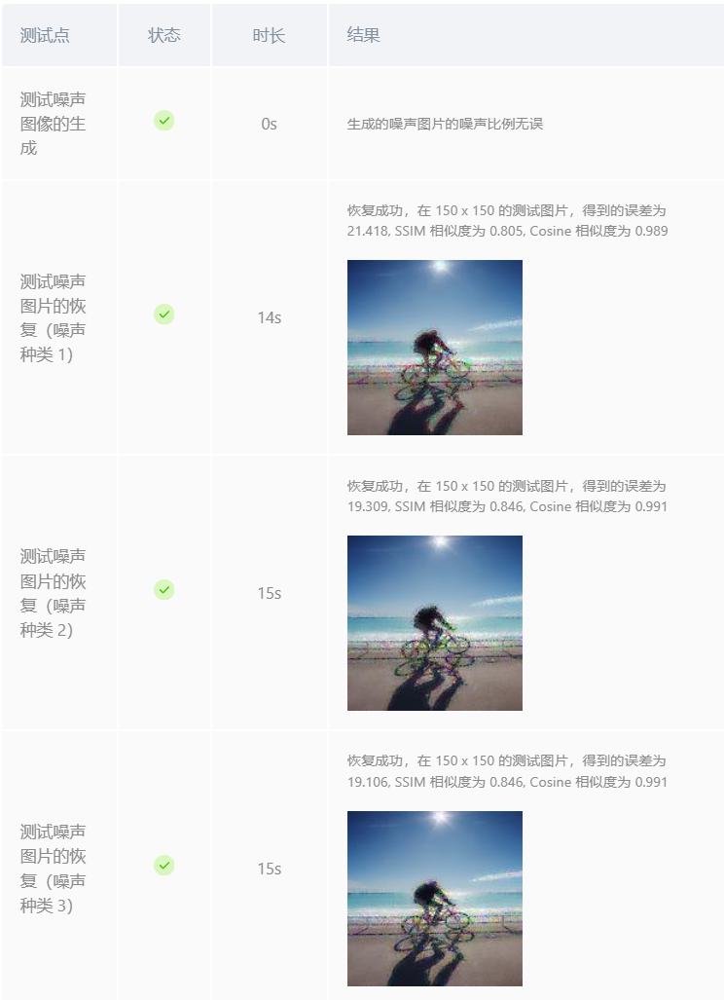

为图片添加噪声：
实验要求受损图像是由原始图像添加不同的噪声遮罩得到的，即( 代表逐元素相乘)：
其中，噪声遮罩仅包含{0，1}值，三个通道的噪声比率为0.8,0.4,0.6，即噪声遮罩每个通道每行 80%,40%,60% 的像素值为0，其他为1
按照要求，我们根据比例在每个通道随机生成0元素，噪声遮罩的大小需与原图的长宽保持一致，以便后续计算，代码如下：
height, width, channels = img.shape
noise_masks = []
for ratio in noise_ratio:
mask = np.random.choice([0, 1], size=(height, width), p=[ratio, 1 - ratio])
noise_masks.append(mask)
再将原图与噪声遮罩逐元素相乘，得到受损图像：
noise_img = np.stack([img[:, :, i] * noise_masks[i] for i in range(channels)], axis=2)
去噪算法：
在进行去噪的过程中，我最初选择了均值滤波算法和中值滤波算法，但是恢复精度很低（后发现是没有排除邻域中的噪声像素点导致的），然后尝试了线性回归算法，这里给出三种算法的实现过程，效果对比见实验结果与分析：
均值滤波：对图像进行均值滤波，即对于每一个噪声像素，使用像素周围邻域的像素的平均值来代替该像素的值（注意应排除邻域中的噪声像素点，否则将影响恢复效果）
代码如下：
res_img = np.copy(noise_img)
noise_mask = get_noise_mask(noise_img) # 获取噪声掩码
height, width, channels = noise_img.shape
half_size = size // 2
for c in range(channels):
for i in range(height):
for j in range(width):
if noise_mask[i, j, c] == 0: # 如果是噪声点
# 获取邻域窗口
top = max(i - half_size, 0)
bottom = min(i + half_size + 1, height)
left = max(j - half_size, 0)
right = min(j + half_size + 1, width)
# 提取窗口内的非噪声像素
region = noise_img[top:bottom, left:right, c]
mask_region = noise_mask[top:bottom, left:right, c]
valid_pixels = region[mask_region == 1]
# 计算均值并替换噪声像素
if valid_pixels.size > 0:
res_img[i, j, c] = np.mean(valid_pixels)
else:
res_img[i, j, c] = 0.5 # 若无有效像素，设为 0.5（灰色）
return res_img
中值滤波：对图像进行中值滤波，即对于每一个噪声像素，使用像素周围邻域的像素的中值来代替该像素的值（注意应排除邻域中的噪声像素点，否则将影响恢复效果）
代码只需要将均值滤波中的均值计算改为中值计算即可：
res_img[i, j, c] = np.median(valid_pixels)
线性回归：对于每个噪声像素，使用其周围邻域的像素的坐标值作为自变量，像素点的像素值作为因变量进行线性回归分析，并采用线性回归结果来预测该像素的值（注意应排除邻域中的噪声像素点，否则将影响恢复效果，同时应注意需将线性回归的结果归一到[0,1]内）
代码如下：
res_img = np.copy(noise_img)
# 获取噪声图像
noise_mask = get_noise_mask(noise_img)
# -------------实现图像恢复代码答题区域----------------------------
height, width, channels = noise_img.shape
# 初始化线性回归模型
model = LinearRegression()
#model = Ridge(alpha=0.1)
# 对每个通道进行处理
for c in range(channels):
# 遍历每个像素
for i in range(height):
for j in range(width):
if noise_mask[i, j, c] == 0: # 如果是噪声点（掩码为 0）
# 获取周围区域的边界
half_size = size // 2
top = max(i - half_size, 0)
bottom = min(i + half_size + 1, height)
left = max(j - half_size, 0)
right = min(j + half_size + 1, width)
# 提取周围区域的坐标和像素值
region = noise_img[top:bottom, left:right, c]
coords = []
values = []
for x in range(region.shape[0]):
for y in range(region.shape[1]):
if region[x,y] != 0:
coords.append([x+top, y+left]) # 计算全局坐标
values.append(region[x, y])
coords = np.array(coords)
values = np.array(values)
# 训练线性回归模型
model.fit(coords, values)
# 预测当前噪声点的像素值
predicted_value = model.predict([[i, j]])[0]
#predicted_value = np.clip(predicted_value, 0, 1)
if predicted_value > 1:
predicted_value = 1
if predicted_value < 0:
predicted_value = 0
# 恢复噪声点
res_img[i, j, c] = predicted_value
均值滤波结果
中值滤波结果
线性回归结果
三种算法对比：均值滤波计算较为简便，但对于边缘的保留效果较差；中值滤波可有效去除脉冲噪声，对于边缘像素的保留效果也较好，但计算复杂度稍高，且在密集噪声或大窗口下，可能误删细小纹理；线性回归算法采用拟合的方法，可以使恢复的像素值更加平滑且保留细小纹理效果较好，但计算复杂度较高。
从上述结果可以看出，三种图像恢复的效果都很好，SSIM相似度都达到了0.86以上，cosine相似度达到了0.98以上。但是线性回归的精度略高，这是因为线性回归算法可以更好地拟合噪声点的像素值，从而更好地恢复图像。